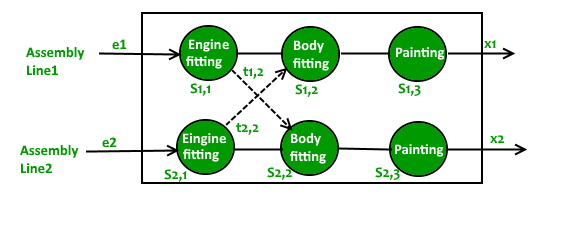
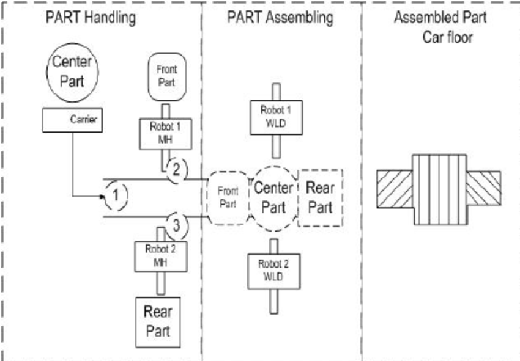
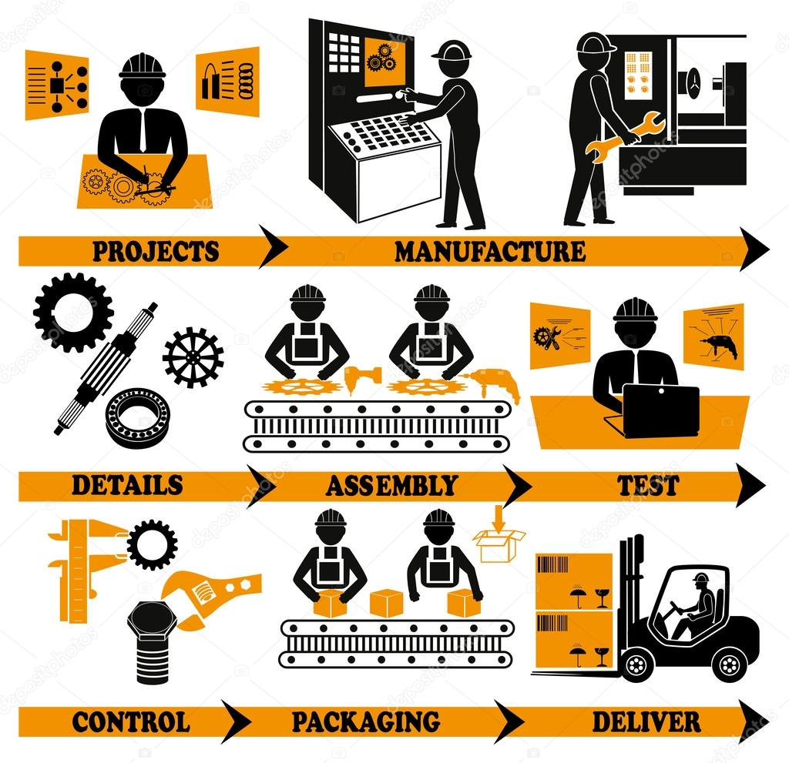
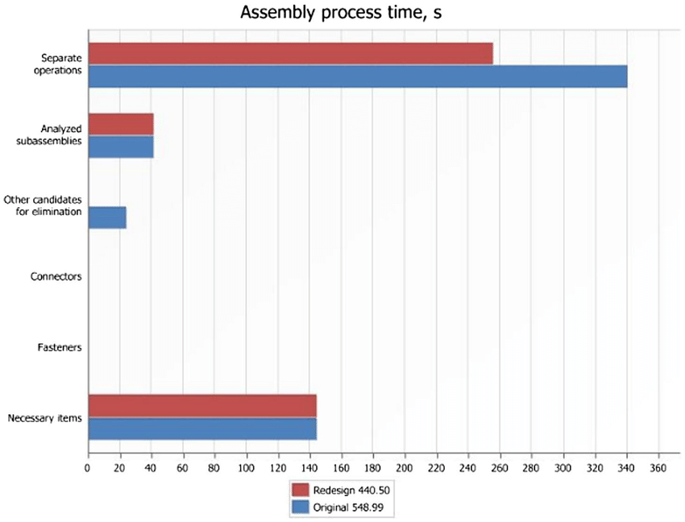
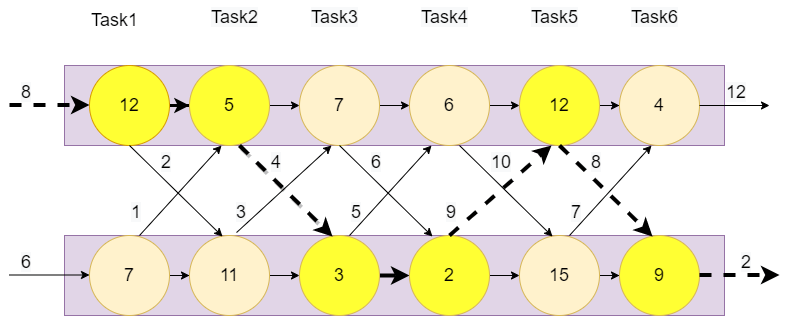
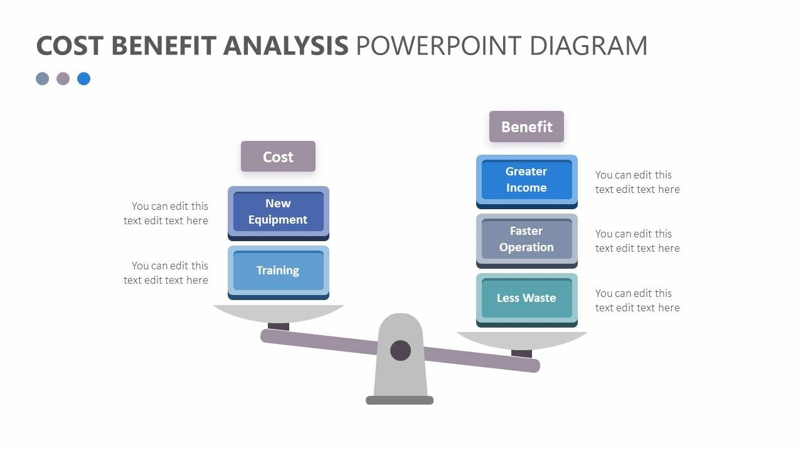
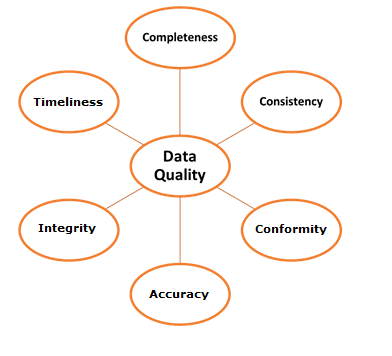
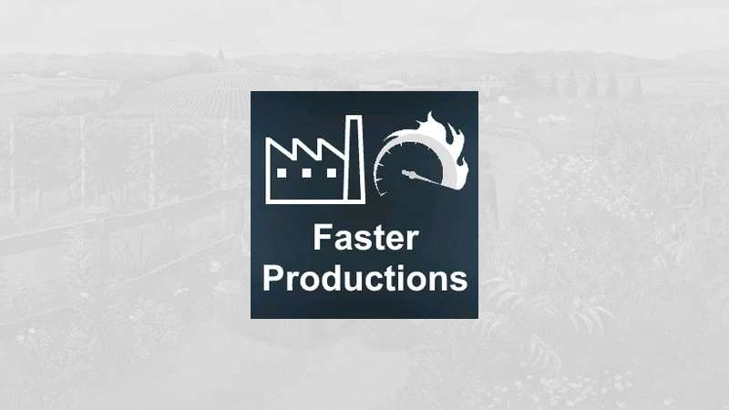
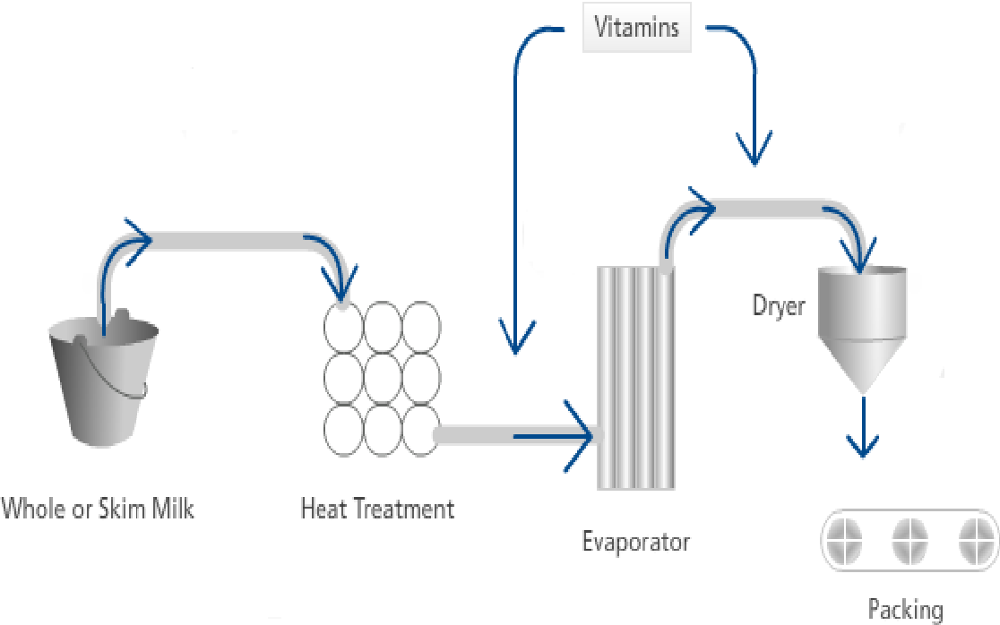
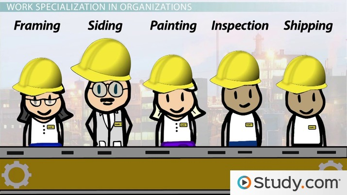

Assembly lines allow products to be made quickly and efficiently. Each worker performs a specific task, which helps to streamline the production process and minimise wasted time.
By dividing the manufacturing process into smaller tasks, assembly lines enable workers to specialise in their respective tasks. This specialisation leads to increased productivity as workers become more skilled and efficient in their specific area.
Assembly lines often result in lower production costs. The efficient workflow and increased productivity help to reduce labour and manufacturing expenses, making the overall production process more cost-effective.

Assembly lines ensure consistent quality by setting specific standards for each task. Workers are trained to perform their assigned tasks with precision, resulting in standardised and reliable products.

With the division of labour, assembly lines enable products to be manufactured at a faster rate. The continuous flow of work and the elimination of downtime between tasks contribute to faster production times.

Assembly line jobs typically involve repetitive tasks, which can become monotonous and tedious over time. This can lead to decreased job satisfaction and potentially affect the motivation and well-being of workers.
Assembly lines are designed to produce a specific product or a limited range of products. If there is a need to switch to a different product or make significant changes to the production process, it can be challenging to adapt the assembly line quickly.
Assembly lines heavily rely on machinery and equipment. If there is a breakdown or malfunction in any part of the assembly line, it can disrupt the entire production process and cause delays until the issue is resolved.

While specialisation enhances productivity, it can also limit the versatility of the workforce. Workers may become highly skilled in one particular task but lack the ability to perform other tasks, which can hinder their career development and job opportunities.

Assembly line work often involves strict adherence to set procedures and limited decision-making authority. Workers may have little control over their tasks or the overall production process, leading to a lack of autonomy and creativity in their work.